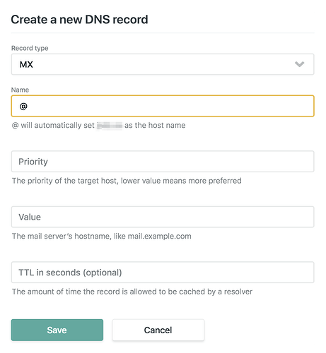

Adding a Custom Email to Your Netlify-Hosted Quarto Website
If you’ve successfully followed Jadey Ryan’s blog to publish a Quarto website on Netlify, congrats! Your site might already be awesome with a custom domain like example.com. However, if you’re yearning for that professional touch with a custom email address like johnsmith\@example.com, fear not—I’m here to guide you through the process. Let’s jazz your site. 🚀
Netlify Limitations
Netlify doesn’t provide email services1, so you’ll need to choose your own provider.
Just a heads-up, this tutorial is designed for those using Netlify’s DNS Hosting services2. Forget about paid options like Zoho Mail; we’re opting for the free wonders of ImprovMX and Gmail—more than sufficient for the job!
Once your Quarto website is set up with a custom domain on Netlify3, follow these steps:
1 Email Forwarding with ImprovMX
ImprovMX promises email forwarding in seconds, and the best part—it’s absolutely free forever!
Now, let’s look at the free plan perks:
1 domain
25 aliases per domain
500 incoming emails per day
10Mb attachment limit
Normal forwarding speed
Email support only
Sure, it might not come with all the bells and whistles, but hey, it’s free, and it’s more than good enough for the task at hand! 🌈
1.1 Create an ImprovMX account
- Visit ImprovMX.

- Enter your domain (
example.com) and the email address you want to forward to (e.g.,youraddress@gmail.com). - Click
Create a free alias.
It will bring you to a new page with some required information to fill in, like your full name and location.
1.2 Create Aliases
Time to get creative! Begin adding aliases like johnsmith@example.com, hello@example.com, sales@example.com, customer@example.com, and the list goes on! 🌟 You can have up to 25 aliases with the free plan.

Mission accomplished with your aliases? Sweet! Now, onto the next part—DNS Settings.
1.3 Set up DNS setting
This section comprises two essential components: 1) MX entries and 2) SPF records. It’s crucial to configure them accurately to authorize ImprovMX for sending emails on your behalf and ensure ImprovMX can efficiently receive and forward your emails. 📧✨

Let’s add these settings into the DNS configuration of your Netlify domain.
To do this:
🌐 Log in to your Netlify account.
🖱️ Go to
Domains--> Clickyour domain name-->Add a new recordunderDNS settings.
 Here is reiteration of what Suppor
Here is a reiteration of the recommended steps outlined in the Support Guide article:
The settings for each record are as follows:
Record type: Select MX.
Name: Use just the @ symbol; no additional information is needed.
Priority: An integer; lower numbers indicate higher priority. Set it to the recommended value from your email service provider.
Value: This should be the server path provided by your email service.
TTL (Time To Live): This will default to 3600 seconds, and the default setting is usually appropriate.
For me, I input all three corresponding entries with their respective values. It’s a pretty straightforward process. Once you are set up, the message “Email forwarding needs setup” in red will change to “Email forwarding active” in green. 🟢📬

You can verify its functionality by clicking on the test button. 🧪
Now, you’re all set to receive emails addressed to your domain or custom email address. 📧✨
2 Set up in Gmail
ImprovMX has a helpful guide for this process. Check it out if you like. Here, I’ll walk you through my experience:
Ensure your Gmail account has Two-Factor Authentication (2FA) enabled. If not, you can set it up here.
Generate an App Password by clicking here. You’ll need to re-enter your Gmail password for this.
In the
App name, enterImprovMX aliasand clickCreate. This will display yourapp passwordon a new screen. Keep this screen open in a separate tab; you’ll need theapp passwordfor Gmail setup. 🌐🔐

Now you’re ready to proceed with the Gmail configuration.
Open your Gmail (preferably in a separate tab) and navigate to settings. You can do this by going to Settings > See all settings or simply click here.
In the
Accounts and Importtab, underSend email as:, clickAdd another email address.
Enter your
email aliasin theEmail Addressfield and uncheck “Treat as an alias”. ClickNext Step.
Enter
smtp.gmail.comin theSMTP Server, your email address in theUsername, and yourapp passwordin thePassword. Leave the rest as it is. Click “Add Account”.
When you copy the code, be cautious as it may contain white spaces. The code should be 16 digits long.

Gmail will send you an email requesting confirmation of ownership via a provided link. Simply click on the link to confirm, and you’re good to go!
From now on, you can easily choose your alias from the list when composing a new message.
In a nutshell
You’ve just given your Quarto website on Netlify a major upgrade with a cool custom domain and professional email address. Test out the workflow and let me know. If you face any issues or have more questions, feel free to reach out at hello@myominnoo.com.
Happy customizing, and best of luck with your improved online presence!
References
Footnotes
Citation
@online{minn_oo2023,
author = {Minn Oo, Myo},
title = {Adding a {Custom} {Email} to {Your} {Netlify-Hosted} {Quarto}
{Website}},
date = {2023-12-02},
url = {https://myominnoo.com/blog/2023-12-01-email-custom-domain-netlify/},
langid = {en}
}